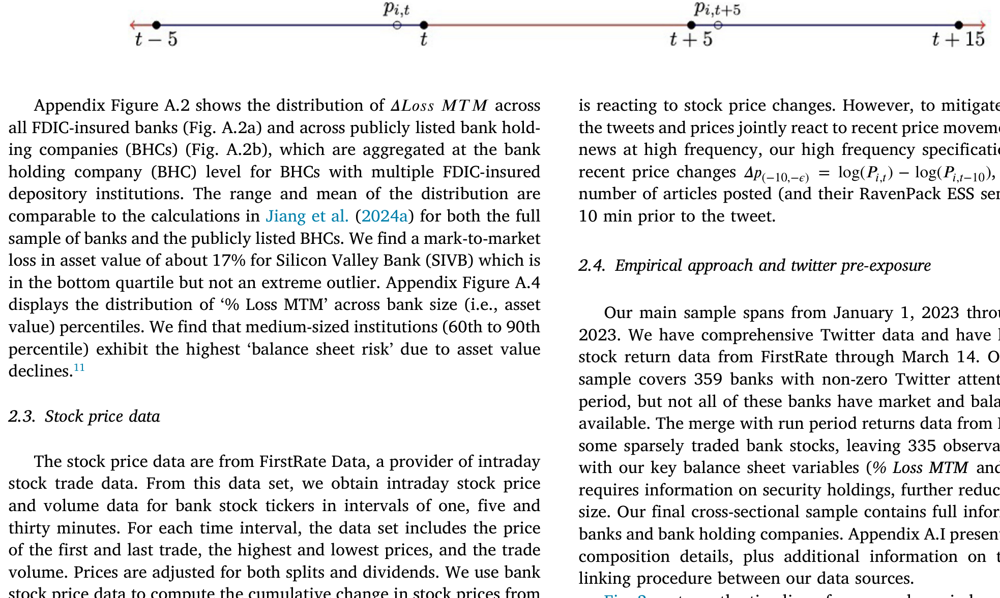
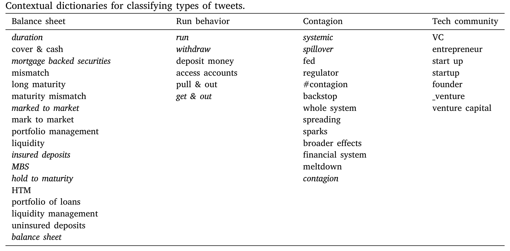
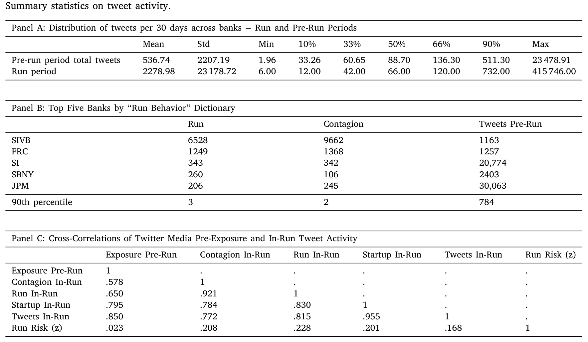
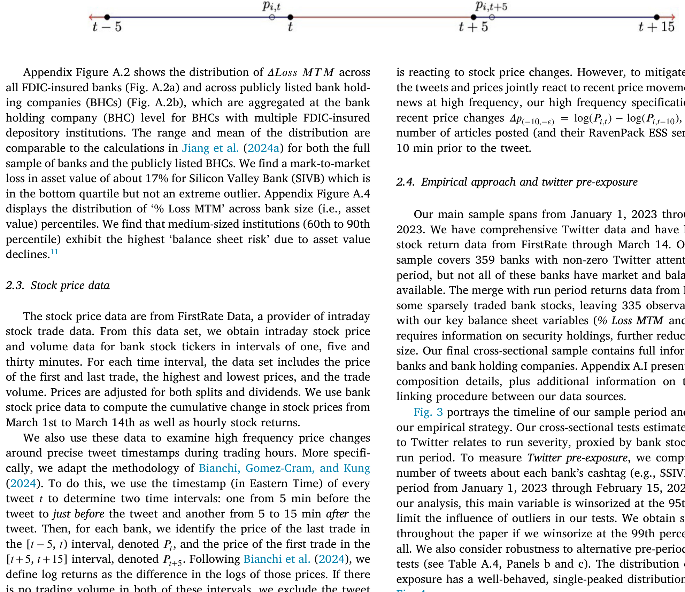
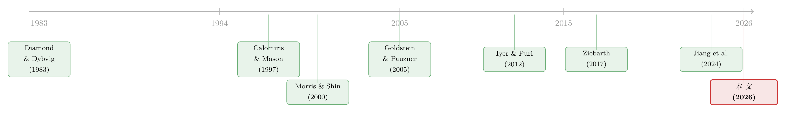

四天，一条推特，挤垮一家银行：社交媒体如何成为挤兑的「催化剂」
本文读的是 Cookson, Fox, Gil-Bazo, Imbet & Schiller (2026, Journal of Financial Economics)：2023 年 3 月硅谷银行（SVB）挤兑前后，事前推特曝光度高的区域性银行在挤兑期间多跌了 4.3 个百分点；而且，真正放大挤兑风险的是社交媒体的注意力（attention），而非负面情绪（sentiment）。换句话说，推特不是凭空制造了一场危机，它是把一台早已存在的「挤兑引擎」点着了的火花。
1 一场四天的挤兑
先讲一个几乎所有人都还记得的故事。2023 年 3 月 9 日，硅谷银行（Silicon Valley Bank, SVB）的储户开始排队取钱——只不过，这一次的「队」不在银行大厅，而在推特上。一群看上去像是储户的人公开地、毫不掩饰地在推文里使用「withdraw（取款）」这样的词。第二天，3 月 10 日，SVB 倒闭。从恐慌蔓延到机构关门，前后不过四天。
这种速度是前所未有的。要知道，按照教科书里的挤兑，储户得物理地跑到银行、排起长队、彼此看见对方的恐慌，挤兑才会自我实现。可这一次，恐慌的传播不需要任何人离开沙发。也正因如此，FDIC 主席 Gruenberg 在 2023 年 5 月的国会证词里，专门点了社交媒体的「传染效应（contagion effects）」的名（Gruenberg, 2023）。
但有意思的是——这正是本文的张力所在——尽管政策制定者一口咬定社交媒体是元凶，可主流的 2023 银行业压力复盘（比如 Acharya et al., 2023）却只是顺带提了一句社交媒体。一边是监管层的高度警觉，一边是学术叙事里的轻描淡写。到底谁对？社交媒体在这场挤兑里，究竟是「主犯」、「帮凶」，还是仅仅是一个「旁观的记录者」？
这就是这篇论文要回答的问题。
2 真正的核心：是「注意力」，还是「情绪」？
在往下走之前，必须先把这篇文章最值钱的一个区分讲清楚，因为全文都在围着它转。
理论上，社交媒体放大挤兑，可以走两条完全不同的路：
第一条路是「信息」。 这是 Calomiris and Mason (1997) 的视角：银行本来就资不抵债，社交媒体只是更快地把「这家银行有问题」这个坏消息传播开来，于是储户做出了本就该做的理性反应。按这个逻辑，挤兑是健康的市场纪律，社交媒体不过是让纪律来得更快——它传播的是负面情绪/坏消息。
第二条路是「协调」。 这是 Diamond and Dybvig (1983) 以来协调博弈模型的视角，后来被 Goldstein and Pauzner (2005) 精炼：哪怕一家银行基本面没那么糟，只要储户们都相信别人会跑，挤兑就会自我实现。在这套模型里，关键不是坏消息，而是一个能让所有人「同时把目光投向同一个方向」的公共信号——Morris and Shin (2000) 称之为「太阳黑子（sunspot）」。社交媒体天然就是这样一个公共、可见、瞬时的协调装置。它传播的是注意力，而非具体的好坏判断。
把这两条路记牢：信息渠道 = 负面情绪驱动；协调渠道 = 注意力驱动。 这篇论文最漂亮的地方，就是它能把这两者在数据里分开来量，然后告诉你哪一个真的在起作用。
剧透一下答案：是注意力。负面情绪几乎没有放大作用。这个结论是反直觉的——我们直觉上以为「骂银行的推文越多，挤兑越凶」，但数据说，只要大家都在讨论这家银行（无论说好说坏），风险就被放大了。下面我们一步步看他们是怎么把这件事钉死的。
3 识别策略：用「事前曝光」绕开鸡生蛋的难题
一个自然的问题是：推特讨论和股价下跌，到底谁先谁后？挤兑期间，股价在跌、推文在涨，二者搅在一起，你怎么知道是推文导致了下跌，而不是下跌引来了围观的推文？这是典型的反向因果。
作者的第一招，是把变量「往前挪」。他们定义了一个核心解释变量——推特事前曝光（Twitter pre-exposure）：用 2023 年 1 月 1 日到 2 月 15 日之间、关于每家银行的推文数量的对数来度量，这比 SVB 挤兑早了将近一个月。这个时点的妙处在于，它早于任何人能预见这场危机。作者还专门验证了一件事：事前曝光主要由对银行的乐观（optimism）而非怀疑驱动，而且和传统的挤兑风险因子基本无关——也就是说，一家银行事前在推特上「有热度」，并不是因为它本来就快不行了。
为什么事前的热度能预测挤兑期的剧烈讨论？因为投资者社媒用户是一群「狂热分子（fanatics）」（Pedersen, 2022; Cookson et al., 2023）：他们反复地、固执地谈论同样几只股票。Cookson et al. (2023) 甚至发现，一个对某只股票看多的用户，在 50 天后有超过 95% 的概率仍然看多。于是，事前谁在被讨论，事中谁就会被疯狂讨论——这条「预先铺好的传播管道」，就成了一个事前确定、不受挤兑反向污染的工具性度量。
第二招，是和经典挤兑风险做交互。作者借用 Jiang et al. (2024a) 的思路，把「挤兑风险（bank run risk）」定义为未保险存款占比与按市值计价亏损的乘积：
$$\text{Run Risk}_i = \%\,\text{Uninsured}_i \;\times\; \%\,\text{Loss MTM}_i$$
直觉很清楚：未保险存款占比高，意味着有大量「会跑」的钱；按市值计价亏损大（主要来自加息后债券组合的浮亏），意味着银行真到了要抛资产时会亏穿。两者相乘，才是真正脆弱的银行。论文的关键检验，是看推特事前曝光 × 挤兑风险这个交互项——如果社交媒体只是放大了「本就脆弱的银行」的脆弱性，那么这个交互项应该显著为负。

Figure 3: portrays the timeline of our sample period and the timing of
作者还做了大量「堵漏」：控制了银行规模、2022 年第四季度的传统媒体报道与分析师覆盖、2022 下半年的股票回报、FOMC 公告前后的回报、散户关注度，以及一大堆银行稳健性与融资特征；用更早（回溯到 2022 年 10 月）的事前窗口重新度量；剔除「避险资金流入」的大行（Caglio et al., 2023）；甚至把 SVB 本身从样本里拿掉。结论都稳。他们还跑了 Simonsohn et al. (2020) 的「设定曲线（specification curve）」分析，把控制变量的所有组合都试了一遍，并用置换检验做基准——核心结果纹丝不动。
4 数据：把整个推特「银行对话」搬进来
数据这一块的体量值得单说。借助推特 API 的学术权限，作者收集了 2020 年 1 月 1 日到 2023 年 3 月 14 日、所有带「美元标签（cashtag，即 \$ 加股票代码）」、针对三位 SIC 码为 602/603/609 的存款机构的原创英文推文，共计 5,399,740 条。另外单独抓了 2023 年 1–3 月带 cashtag 的转发（retweet）共 765,224 条，以及全部 544,888 名发推用户的账户层信息（粉丝数、注册时间、个人简介等）。
每条推文用 VADER（Valence Aware Dictionary and sEntiment Reasoner, Hutto and Gilbert, 2014）打情绪分——这是个专为社媒短文本设计的情绪分类器，输出一个 −1（极负）到 1（极正）之间的分数。在推文层的检验里，作者把负面分量和正面分量分开用，以捕捉好坏消息的不对称影响。

Table 1
5 主要结果：4.3 个百分点，和那条「会跑」的曲线
现在把结果摆出来。
横截面上，无条件地看，推特事前曝光每增加一个标准差，SVB 挤兑期间的银行股市值损失就多 4.3 个百分点。这个量级，和「未保险存款多一个标准差」带来的跌幅相当——而且在控制了未保险存款之后依然稳健。更关键的是那个交互项：推特事前曝光 × 挤兑风险显著为负。也就是说，社交媒体的放大效应，集中在那些未保险存款多、浮亏大的银行身上。对基本面稳健的银行，推特热度并不致命。

Table 2
存款外流这条线索是个漂亮的交叉验证。有人会担心：用「挤兑期股价损失」来代理「挤兑严重程度」，靠谱吗？于是作者把因变量换成 2023 年第一季度的实际存款外流率，重做了一遍。结果一致：高事前曝光预示着更多存款外流，尤其是未保险存款的外流，并且同样集中在未保险占比高、浮亏大的银行。虽然存款数据只有季度频率，但它和股价证据的高度一致，反过来给「用股价损失代理挤兑严重程度」这个做法背了书。
描述性的「数量级」也触目惊心。 从 3 月 8 日到 3 月 14 日，用户发了 6,528 条关于 SVB 的「run（挤兑）」推文，大约是排第二名（第一共和银行 FRC，后来在 5 月 1 日也倒了）的五倍；提及「contagion（传染）」的推文，SVB 一家就有 9,662 条。而且作者在横截面回归里发现，一旦控制了挤兑期内对「run」和「contagion」的讨论，推特事前曝光的系数就显著变小——这说明事前曝光正是通过「挤兑式对话」这条链路，传导到股价崩跌的。
6 把时钟拨快：小时级与分钟级的证据
到这里，怀疑论者还能再追一句：横截面回归终究是「事后」的相关。挤兑期的推文，到底发生在股价下跌之前还是之后？为了回答这个时序问题，作者把分析推进到小时级和分钟级。
小时级面板里，他们用「过去四小时推文数是否高于中位数」来度量近期推特注意力，再和「挤兑期指标（3 月 9 日上午 9 点之后）」交互，并按挤兑风险高低分样本估计。结果干净利落：在高挤兑风险样本里，滞后的推特注意力与挤兑期指标的交互项显著为负且量级很大；在低挤兑风险样本里，则看不到这种交互。而且，高低风险银行的回报分化，恰恰是在 3 月 9 日早上挤兑开始的那一刻才出现的。这个结论在剔除 SVB、剔除「大而不能倒」的银行、加入银行固定效应（在 3 月初这么短的窗口里，固定效应几乎控制住了一切随银行-月份变化的因素）后都成立。
真正关键的一步在于：他们在同一套小时级设定里，把推特情绪单独放进去。结果是——在高挤兑风险样本里，情绪与挤兑期指标的交互项几乎为零。注意力放大了挤兑风险，情绪没有。这就是第 2 节那个核心区分，在数据里被钉死的瞬间。
分钟级则是最锐利的识别。作者借鉴 Bianchi et al. (2023, 2024) 的高频方法，用 FirstRate 的分钟级股价，只看「推文发出前到发出后 5 分钟」这个极窄窗口，从而排除窗口外的混杂事件。结论是：挤兑期内发出的中性情绪推文，对银行股价有显著的负向冲击，而挤兑前则又小又不显著；负面情绪推文对应更低的回报，尤其在挤兑期。最戏剧性的是——如果这条推文出自科技社群（tech community）成员，或者含有「run／contagion」词典里的词，负面情绪的冲击大约要强 10 倍。
不过作者很诚实：在这些推文层的高频检验里，情绪在高/低挤兑风险银行之间的差异接近于零。原因也讲得通——推文层检验把「一条推文」当成一个观测，等于把「注意力」这个维度给固定住了，所以它只能印证「情绪」那一半，对「注意力的放大作用」是沉默的。两个频率合在一起，故事才完整：注意力放大挤兑风险，情绪不放大。

Figure 4
7 谁在发推？——SVB 的「科技社群」与转发的力量
最后一块拼图，是「谁在说话」。作者利用 SVB 的一个独特之处：它的储户高度集中在硅谷的「科技社群」。他们根据用户简介里的创始人类词汇（如「entrepreneur」「founder」）来识别这群人，然后发现：科技社群的推文，在推文总量初次飙升之后才明显爆发，而且更倾向于提「SVB」而非投资者代码「SIVB」（见 Fig. 2）。
这个时序差异藏着深意。作者特意把投资者中心的「\$SIVB」对话，和更一般的「SVB／Silicon Valley Bank」对话分开追踪。Fig. 1 显示，投资者中心的「SIVB」推文率先飙升，随后才轮到「SVB」——这正好符合一个故事：先是投资者的讨论引发了对银行问题的担忧，然后储户们才在推特上彼此协调、商量「把钱取出来」。换句话说，高度集中、高度网络化的沟通，对挤兑风险尤其危险。
这也呼应了情绪检验里那个「10 倍」：当发推的是真正的储户（科技社群）、当推文谈的是「跑路」和「传染」时，社交媒体的破坏力被成倍放大。而把这一切串起来的，是转发（retweet）——作者发现，注意力的放大作用，主要由那些被大量转发的推文和时段驱动。社交媒体之所以是「社交」的，恰恰在于转发把一个人的恐慌，瞬间变成了一群人的共识。
8 文献脉络
把这篇论文放回它所在的谱系，故事会更清楚。
源头当然是 Diamond and Dybvig (1983)：挤兑的本质是储户「信念的协调」。沿着这条线，一支文献强调沟通在协调中的核心作用——Calomiris and Kahn (1991) 论证可随时提取的债务（demandable debt）如何塑造银行治理，Goldstein and Pauzner (2005) 把挤兑刻画为协调博弈里的低效均衡，Morris and Shin (2000) 给出了「太阳黑子」式公共信号的概念。与之竞争的，是 Calomiris and Mason (1997) 的信息视角：挤兑是把基本面已经资不抵债的银行清算掉的过程。

另一支文献关心传染如何沿社会网络传播：Iyer and Puri (2012) 用储户层数据揭示了储户-银行关系与网络的重要性，Kelly and Gráda (2000) 研究了移民网络与口耳相传。而在「沟通技术的真实后果」这条线上，最贴近本文的是 Ziebarth (2017)——它研究大萧条期间广播对银行困境的影响。本文作者明确地把社交媒体与广播对照：广播是稀疏的、单向的，而社交媒体能聚合多方信息、瞬时双向传播，因而是一个更强的协调装置。
再往近处看，是 Jiang et al. (2024a)：他们形式化地说明，挤兑风险取决于储户对「清醒的未保险储户比例 \(s\)」的信念，而 \(s\) 又部分由对银行健康的预期决定。本文的贡献，正是给这个 \(s\) 找到了一个现实世界的放大器——更高的社交媒体曝光，会抬高每家银行的 \(s_i\)，从而把挤兑风险放大。至于 2023 年这场区域性银行危机的总量后果与存款再配置，是另一条值得并读的线索（关于存款流向比哪家银行倒下更重要这一点，可参见《存款往哪儿流，比哪家银行倒下更重要》；关于加息如何在不同银行间产生异质冲击，可参见《同样的加息，为什么德国的银行和西班牙的银行走向相反？》）。
在「投资者社媒」这一支（Cookson and Niessner, 2020; Cookson et al., 2023; Pedersen, 2022）里，过去的研究多看投资结果，少有人触及真实经济后果。本文是第一篇为「挤兑」提供社交媒体传导渠道直接证据的工作。
评论与延伸（Q&A + 研究方向）
(a) 几个可能的疑问
Q：「注意力」和「负面情绪」听起来差不多，凭什么说是注意力而非情绪在起作用？
凭两个频率的证据交叉。小时级里，把情绪单独放进去，它与挤兑期指标的交互在高风险样本里近似为零，而注意力的交互显著为负；推文层高频里，情绪虽有冲击，但在高/低挤兑风险银行间的差异也近似为零。能放大「挤兑风险」的，只有注意力。背后的理论含义是：协调（太阳黑子）渠道，而非信息渠道，在主导。
Q：事前曝光会不会只是「这家银行本来就快不行了，所以大家才讨论」？
作者专门验证了事前曝光由乐观而非怀疑驱动，且与传统挤兑风险因子基本无关；并且事前曝光的窗口（1 月 1 日–2 月 15 日）远早于危机。再加上控制了媒体报道、分析师覆盖、历史回报、散户关注度等一系列「自然的关注度来源」，反向因果的故事很难成立。
Q：用「挤兑期股价损失」代理「挤兑严重程度」，可信吗？
这正是作者用季度存款外流数据做平行检验的原因。高事前曝光预示更多（未保险）存款外流，且同样集中在脆弱银行——两套证据方向一致，互为背书。
Q：会不会只是 SVB 一家的故事，被当成了普遍规律？
剔除 SVB 后，横截面与小时级的核心结论都还在；对「run／contagion」讨论的控制会显著压低事前曝光系数，说明传导链路不止 SVB 一例。当然，SVB 的「科技社群」高度集中，是这场挤兑格外迅猛的特殊条件，外推到普通区域行时要打折。
Q：如果社交媒体加速了对「真·坏银行」的清算，那它不是好事吗（市场纪律）？
这是 Diamond and Rajan (2000) 式的辩护。但本文的注意力（而非情绪/信息）证据，更支持「协调/太阳黑子」解读：风险被放大并不必然对应基本面恶化，而可能源于一个公共信号让储户同时转身。当社媒可以传播不准确信息时，它就可能成为引发挤兑的太阳黑子——这正是作者所谓「potentially troubling」的地方。
Q：这套结论对今天还成立吗？毕竟推特已经改名 X。
论文的机制是关于「快速、公开、可被任何人转发」的沟通技术，而非某个特定平台。只要这三个属性还在，放大效应大概率不会消失，甚至会扩散到其他领域——这也是作者的判断。
(b) 几个可能的研究问题与提案
1. 社交媒体注意力与公司债/信用市场的流动性枯竭
【经济故事】银行挤兑的本质是流动性的协调性撤离；公司债市场在压力期同样会出现做市商收缩、买卖价差骤升的「类挤兑」。如果社媒注意力能放大银行的协调性挤兑，它是否也能放大信用债的赎回-抛售螺旋（尤其经由债券基金的资金流）？ 【可行性】中。债券层流动性可用 TRACE 构建（价差、Amihud），基金资金流用 Morningstar/CRSP MF；社媒注意力沿用 cashtag/发行人提及。识别上可借本文「事前曝光 × 脆弱性」的交互思路，难点是债券不像银行股有清晰的「挤兑日」，需要找到 2020 年 3 月这类外生的市场压力窗口。
2. 外资持有人对社媒协调的（不）敏感性
【经济故事】本文强调「高度集中、高度网络化」的储户群体放大了挤兑。一个自然的镜像问题是：当一家银行或一只债券的边际持有人是外资时，社媒协调是更弱（语言/时区/平台割裂）还是更强（跨境羊群）？这直接关系到外资持有结构对金融稳定的含义。 【可行性】中-低。可结合银行/债券的外资持有比例（如 TIC、13F、各国央行托管数据）与多语种社媒数据。难点在于多语种社媒的可得性与情绪打分的可比性，以及把「外资协调」从「全球共同冲击」中识别出来。
3. 转发网络结构能否预测跨机构传染
【经济故事】作者发现放大效应主要由「被大量转发」的推文驱动。那么，把转发关系画成网络，机构在网络中的中心性/连通度，能否预测它在下一次压力中被「传染」的概率？这把 Iyer and Puri (2012) 的「社会网络传染」搬到了在线网络上。 【可行性】高。本文已收集
765,224条带 cashtag 的转发，足以重建银行-银行的共提及/共转发网络；用 SVB 之后 FRC、Signature 等的相继困境做样本外验证。识别仍是难点（中心性与基本面相关），但作为预测性证据已经很有价值。
4. 「太阳黑子」的可操纵性与监管
【经济故事】如果挤兑可由一个公共信号协调，那么协调信号是可以被人为制造的——恶意做空者、谣言、乃至机器人账号。社媒注意力的放大效应，是否会被策略性地利用来「制造」挤兑？ 【可行性】中。可识别异常的协同发推（bot-like）模式，结合做空头寸（如借券费率、13F 空头）做事件研究。诚实地说，因果识别很难，更可能停在「相关性 + 个案」层面，但政策含义极强。
参考文献
- Calomiris, C. W., & Kahn, C. M. (1991). The role of demandable debt in structuring optimal banking arrangements. American Economic Review 81(3), 497–513.
- Calomiris, C. W., & Mason, J. R. (1997). Contagion and bank failures during the Great Depression: The June 1932 Chicago banking panic. American Economic Review 87(5), 863–883.
- Cookson, J. A., Engelberg, J. E., & Mullins, W. (2023). Echo chambers. Review of Financial Studies 36(2), 450–500.
- Cookson, J. A., & Niessner, M. (2020). Why don't we agree? Evidence from a social network of investors. Journal of Finance 75(1), 173–228.
- Diamond, D. W., & Dybvig, P. H. (1983). Bank runs, deposit insurance, and liquidity. Journal of Political Economy 91(3), 401–419.
- Diamond, D. W., & Rajan, R. G. (2000). A theory of bank capital. Journal of Finance 55(6), 2431–2465.
- Goldstein, I., & Pauzner, A. (2005). Demand-deposit contracts and the probability of bank runs. (As cited in the paper.)
- Hutto, C., & Gilbert, E. (2014). VADER: A parsimonious rule-based model for sentiment analysis of social media text. Proceedings of the International AAAI Conference on Web and Social Media 8(1), 216–225.
- Iyer, R., & Puri, M. (2012). Understanding bank runs: The importance of depositor-bank relationships and networks. American Economic Review 102(4), 1414–1445.
- Jiang, E. X., Matvos, G., Piskorski, T., & Seru, A. (2024a). Monetary tightening and U.S. bank fragility in 2023: Mark-to-market losses and uninsured depositor runs? Journal of Financial Economics 159, 103899.
- Morris, S., & Shin, H. S. (2000). (Sunspots and coordination, as cited in the paper.)
- Pedersen, L. H. (2022). Game on: Social networks and markets. (As cited in the paper.)
- Ziebarth, N. L. (2017). The effect of radio on bank distress during the Great Depression. (As cited in the paper.)
- Bianchi, F., Gómez-Cram, R., Kind, T., & Kung, H. (2023). Threats to central bank independence: High-frequency identification with Twitter. Journal of Monetary Economics 135, 37–54.